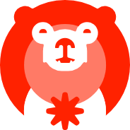

Sun Asterisk is a Digital Creative Studio not just a software development company. In the Creative & Engineering serices, it provides a comprehensive support for idea generation, business design, prototyping, development to growth by specialized teams in technology, design, and business. In the Talent Platform: IT human resources finding, training, introducing in Japan and overseas.
My Journey

During the first month of the training, we had an introduction and an orientation, had a meeting for the new DTS. We setup our local machines with the tools necessary for the work and made an account for github. We got introduced to the different development lifecycle of the projects, had our first scrum meeting and had our first task on the project that they were working on, we were in the QA for the first month and tasked on testing the test cases of the project.
We were transferred to the Development Department on the second month to pursue coding and web development. We were under the care the team leaders during this phase. The first few weeks we learned about the different frameworks and got back to learning the basics of javascript. During our learning on udemy courses they also had some quizzes which we answered. For one month we studied on the different frameworks such as ReactJS, NextJS, Typescript, GraphQL, Prisma, and NestJS, also NodeJS.
On the third moth of the training we were now introduced to a project in collaboration with the new employees to implement what we’ve learned for the past month. We first setup our local on what frameworks and applications they used. We accomplished a lot of tasks during our training within the span of 2 months with the E-Learning System project but we weren’t able to finish it due to difficult obstacles we weren’t table to accomplish.
We were later given another project and this time we started from scratch and we were on our own. We worked on the project for 3 months but ran out of time and we still weren’t able to finish it due to the incoming project placement and the problems that we encountered that we took too long to resolve.
On the tenth month of our DTS we were now placed on an actual project and our client is the one and only Sun Asterisk Company. We are tasked with bug fixes, minor code reviews, and improvement tasks. In the present I am still learning and constantly finding new ways to improve myself, and learn what is best to also improve my skills not just technically but also socially.
I was tasked with an improvement function for the admin/HR to use which makes it exciting since I know that what I'll be making will benefit the company even if it's not that big. I was tasked with creating an export function on the DTR-Management for the admin user and an additional task to change the cut-off filter from per day to every fifteen days or a month. I had trouble at first but I was able to manage by asking for help from the seniors on how to fix the bugs. I was also able to demo the finished function to the admin together with my senior, they approved it and was satisfied with the function
Skillsets Acquired
QA
- Regression Testing
- Understanding the Development lifecycle
- Making Tests cases
- Finding bugs on software
- Data Analysis and Input
- Understanding the customers requirements
- Unit Testing
- Manual Testing
- Automation Testing
Web Developer
- Enhancing knowledge on Vanilla JavaScript
- Using Frameworks such as NestJS and NextJS
- Learning how to setup a database
- Learning how to clone a repository
- Learned how to use GIT
- Learned the proper way of making PR's (push and pull request)
- How to use REST API and CRUD
- Learned about integration
- Learned about GraphQL and how to use it
Projects in the company
- E-Learning System (ESL) I
- E-Learning System (ESL) II
This is the very first project we were aassigned together with sir Mark, there are only three of us on this project though this doesn't have any client and is only a practice project to enhance and implement what we've learned on our self studies. We weren't able to finish this project due to the integration part, we didn't start this project from scratch since it was already started by sir Mark alone. We eventually left this project unfinished and proceeded to take another ESL project where we were the ones that created it from scratch.
What we did on this project was mostly small tasks and mostly on frontend.
This is the second project we were given and this project is the one where only the two of us worked on and from scratch. We made the ERD which took us a lot of revisions since we need to have it approved by sir Joshua first, after making the ERD we proceeded to setting up the database and the necessary programs to run this project on our local. We had a rough start at first due to us not knowing what to prioritize first. I took the authentication task which was difficult for me since I'm not familiar with GoogleOAuth yet, but I was able to manage and finish the task, I eventually moved on to other tasks, we weren't able to finish this project also due to us being deployed on the HRIS after a few weeks. We were only able to finish half of it's functions before being brought to the other project
Projects in the company
- HRIS (Internal Project)
This is our last project during our DTS and this was the biggest one we handled yet. We accomplished a lot of tasks here since mostly are just improvement tasks and bug fix. In the early stages of our time on HRIS we were assigned with minor improvement tasks, then we are tasked with API migration from DOTNET or C# to NestJS, during this API migration stage we didn't finish it fully since sir Jem stated we would be deploying this project for the use of the Admin and HR. We focused on improvement tasks and bug fixes to make the project ready for deployemnt after our DTS ended. I can say that I had a big contribution to this project because I was the one assigned on making the DTR-Management better, I was taksed with the Export Function at first, where the admin can export the data of all employees based on the date filter. After that was implemented the admin wanted to have a cut-off date for the date filter option so that they wouldn't have to manually download all the data by day. I can say that I have made the job of exporting and recording data of the DTR of employees better and faster.